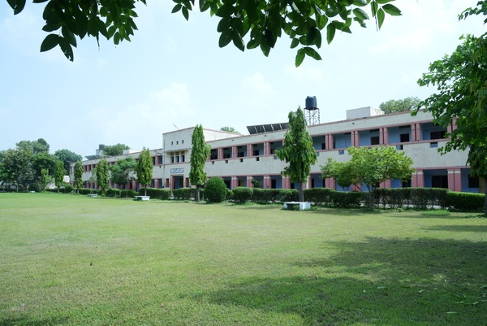
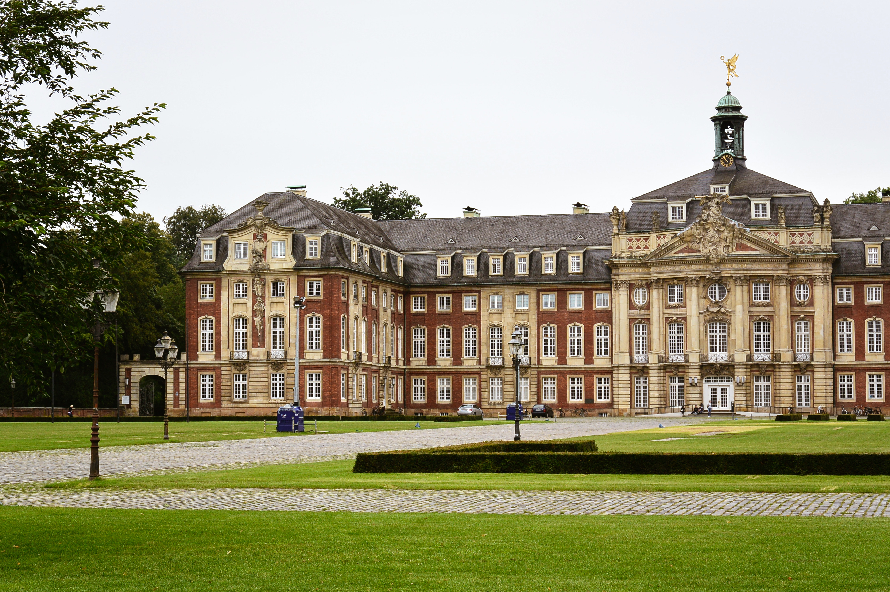

Our Hostel
The Technological Institute of Textile and Sciences (TIT) is a private land-grant research college in Bhiwani, Haryana. Established in 1943, TIT has since played a key role in the development of modern technology and science, ranking it among the top academic institutions in the world. Founded in response to the increasing industrialization of the United States, TIT bonded with Australian woolmark company for textile branch and stressed laboratory instruction in applied science and engineering. The institute has an urban campus that extends more than a mile (0.5 km), and encompasses a number of major facilities such as the TIT Alumi network(TITOBA), and well affiliated laboratories for CS branch.

SARLA BHAWAN

LAXMI BHAWAN

NEW YORK
